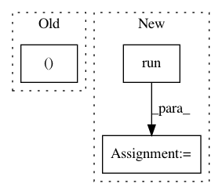

fa7ee697076d2061faeaf7ebf20cdcd5da352eae,tests/application_driver_test.py,ApplicationDriverTest,test_multi_device_multi_optimiser_gradients,#ApplicationDriverTest#,193
Before Change
g_array = np.concatenate([g_0.reshape((1, -1)),
g_1.reshape((1, -1)),
g_2.reshape((1, -1)),
g_3.reshape((1, -1))], axis=0)
g_ave = g_ave.reshape(-1)
g_np_ave = np.mean(g_array, axis=0)
self.assertAllClose(g_np_ave, g_ave)
After Change
])
// query sample discriminator gradient to check
gen_0, gen_1, gen_2, gen_3, gen_ave = sess.run([
tf.get_default_graph().get_tensor_by_name(
"worker_0/ComputeGradients/gradients_1/worker_0/tinynet/G/conv/conv_/conv/ExpandDims_1_grad/Reshape:0"),
tf.get_default_graph().get_tensor_by_name(
"worker_1/ComputeGradients/gradients_1/worker_1/tinynet/G/conv/conv_/conv/ExpandDims_1_grad/Reshape:0"),
tf.get_default_graph().get_tensor_by_name(
"worker_2/ComputeGradients/gradients_1/worker_2/tinynet/G/conv/conv_/conv/ExpandDims_1_grad/Reshape:0"),
tf.get_default_graph().get_tensor_by_name(
"worker_3/ComputeGradients/gradients_1/worker_3/tinynet/G/conv/conv_/conv/ExpandDims_1_grad/Reshape:0"),
tf.get_default_graph().get_tensor_by_name(
"ApplyGradients_1/AveOverDevices_8:0")
])
self.check_gradients(gen_0, gen_1, gen_2, gen_3, gen_ave)
self.check_gradients(dis_0, dis_1, dis_2, dis_3, dis_ave)
SESS_FINISHED.send(test_driver.app, itermsg=None)
test_driver.app.stop()
In pattern: SUPERPATTERN
Frequency: 4
Non-data size: 3
Instances
Project Name: NifTK/NiftyNet
Commit Name: fa7ee697076d2061faeaf7ebf20cdcd5da352eae
Time: 2018-10-30
Author: elias.tappeiner@umit.at
File Name: tests/application_driver_test.py
Class Name: ApplicationDriverTest
Method Name: test_multi_device_multi_optimiser_gradients
Project Name: NervanaSystems/nlp-architect
Commit Name: de2fda821ec02eee57449de9562f80f5993e65ce
Time: 2018-11-25
Author: peteriz@users.noreply.github.com
File Name: nlp_architect/cmd.py
Class Name: StyleCommand
Method Name: run_flake
Project Name: NervanaSystems/nlp-architect
Commit Name: de2fda821ec02eee57449de9562f80f5993e65ce
Time: 2018-11-25
Author: peteriz@users.noreply.github.com
File Name: nlp_architect/cmd.py
Class Name: StyleCommand
Method Name: run_pylint
Project Name: ray-project/ray
Commit Name: d9f1874e3489edc915228dcfdae64d5294034464
Time: 2020-10-27
Author: sven@anyscale.io
File Name: rllib/tests/test_rollout_worker.py
Class Name: TestRolloutWorker
Method Name: test_global_vars_update